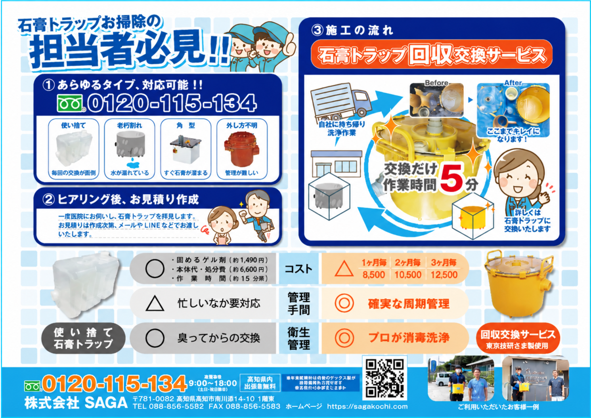

使い捨てでコストがかかる
毎回交換するたびに本体代や処分の手間が発生。
歯科医院・歯科技工所の皆さまへ
汚れた石膏トラップをその場で回収し、洗浄・消毒済みのきれいなトラップへ交換。医院様での面倒な清掃作業を減らします。
受付時間 9:00〜18:00

こんなお悩みありませんか？
毎回交換するたびに本体代や処分の手間が発生。
長年使用したトラップは破損や漏れの原因になることも。
角や底に固まった石膏の除去に時間がかかる。
取り外しや清掃がスタッフのストレスになりやすい。
SAGAのサービス
「取り外す・石膏を出す・洗う・消毒する・戻す」という作業を、医院様で繰り返す必要はありません。
診療や技工作業への影響をできるだけ抑えながら、スムーズに交換します。
ご利用の流れ
お電話またはお問い合わせフォームからご連絡ください。
現在お使いのトラップの種類・サイズ・設置状況を確認します。
対応内容・訪問頻度・料金をご案内します。
汚れたトラップを回収し、洗浄済みのものへ交換します。
回収したトラップを自社で丁寧に洗浄・消毒します。
選ばれる理由
院内で長時間の洗浄作業を行う必要がありません。
臭いや汚れに触れる作業を減らせます。
回収後は自社へ持ち帰り、丁寧にメンテナンス。
「そろそろ掃除しないと」という管理の手間を軽減。
まずは現在のトラップ写真から対応可否を確認できます。
料金の目安
地域・数量・トラップの種類により異なる場合があります。詳しくは無料見積りでご案内します。
こまめな交換で清潔に保ちたい医院様へ
コストと管理のバランスを取りたい医院様へ
使用量が比較的少ない医院様へ
※表示料金はチラシ掲載内容をもとにした目安です。正式な料金はお見積り時にご確認ください。
比較
| 比較項目 | 使い捨て・自院対応 | SAGA回収交換 |
|---|---|---|
| 清掃作業 | 自院で対応 | ◎ 交換中心 |
| 臭い・汚れ | スタッフが対応 | ◎ 回収して持ち帰り |
| 管理 | 交換時期を自院で判断 | ◎ 定期管理 |
| 作業時間 | 状態により長時間 | ◎ 約5分 |
| 衛生管理 | 院内の作業環境に依存 | ◎ 洗浄・消毒対応 |
県外の医院様へ
「自分の地域でも対応できる？」「今使っているトラップでも交換できる？」「料金はいくら？」といったご質問だけでも大丈夫です。
よくある質問
形状・サイズ・設置状況を確認してご案内します。まずは写真をお送りいただくと確認がスムーズです。
目安は約5分です。設置状況により前後する場合があります。
回収したトラップはSAGAで洗浄・消毒するため、医院様での面倒な清掃作業を減らせます。
地域により対応方法が異なります。まずは所在地とトラップの写真を添えてお問い合わせください。
ご利用状況を確認しながらご案内します。まずはお気軽にお問い合わせください。
無料見積り・お問い合わせ
現在お使いのトラップの写真を送るだけでもOKです。対応可否・料金・交換頻度についてご案内します。